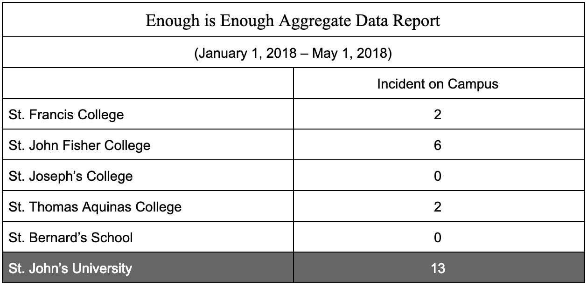

On the heels of Lifetime’s six-part docuseries “Surviving R. Kelly,” students and alumni of St. John’s University are taking to social media to share their experiences with on-campus sexual violence and exposing their alleged attackers using the hashtag #SurvivingSJU.
On Jan. 3,the cable television network Lifetime premiered the first two hours of a six-part series that features anecdotes from survivors of R&B singer Robert F. Kelly. The women, including Kelly’s ex-wife Andrea, accused the superstar musician of preying on them when they were under the legal age of consent, kidnapping them and committed sexual violence against them.
Nearly two million people watched the first of the three night broadcast, according to Entertainment Weekly, and many of the viewers discussed their thoughts on social media using the hashtags “SurvivingRKelly” and “MuteRKelly.” The next day, the topic #SurvivingSJU emerged on Twitter, coupled with tweets from the user @goneeeee_, an anonymous account operated by someone who which claims to be a St. John’s alum. The account has posted photos of several male students and identified them as alleged “sexual predators.”
“#SurvivingSJU The individuals I will list have been recognized & discussed as sexual predators and rapists on the campus of St. John’s University,” @goneeeee_ said on Twitter, adding,
The Eagle requested an interview with @goneeeee_, but the account holder did not immediately respond on Monday. The main tweet was retweeted over 850 times and liked over 1,000 times as of press time.
As of Monday afternoon, @goneeeee_ had posted photographs, names and titles of 14 men, saying that victims of each of the men asked the user to post the information.
The hashtag prompted other current and former students to describe their own negative experiences with university administrators when they attempted to report their own sexual assault cases.
St. John’s University spokesman Brian Browne told the Eagle the school has connected with students who have shared their stories of sexual assault online.
Several student organizations, including the Black Student Union, Spectrum and SOC, released statements requesting a “strict revision of the University’s Title IX policies, hiring policies for student and non-student workers and overall campus safety protocols.”
Another anonymous Twitter account @vincentianteens, tweeted that St. John’s published false sex crime statistics in 2015 and shamed victims for reporting incidents if they were intoxicated. According to the Jamaica Campus crime statistics, one rapes was reported in the on-campus residence halls in 2015 and four in 2017.
The account also posted text messages it said depicted a student apologizing to another fellow Johnnie for sexually assaulting her.
Browne told the Eagle that in 2017, St. John’s was one of 95 schools — out of a total 244 higher education institutions in the state — that was “fully compliant” with New York Education Law Article 129-, the most aggressive law in the nation to protect students from sexual assault.
Browne said students are encouraged to reach out to their “Sexual violence Outreach, Awareness, and Response” (SOAR) Office and to file reports through the University’s website. He said the school grants amnesty to any student who is intoxicated or impaired and reports sexual assault.
Incidents of students publishing names of alleged sexual predators at the St. John’s Jamaica campus have gone back as far as the early 2000s when students printed names of male students alleged to have sexually assaulted women on campus. Students copied the lists of names and shared them in dormitories.
On Saturday, SOC released a 20-minute survey to evaluate the effectiveness of campus resources for sexual violence. The organization is encouraging past and present students as well as employees — whom have or haven’t had a sexual assault incident — to take the survey.